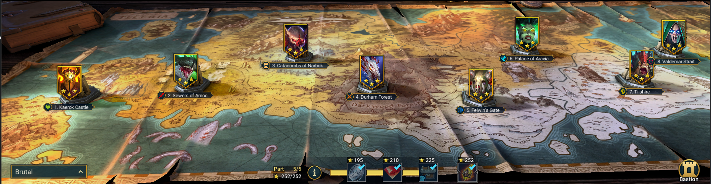
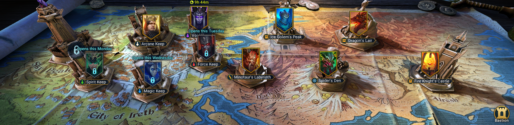
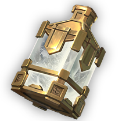
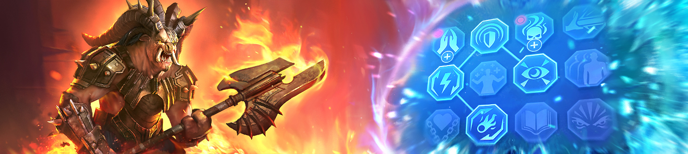

<div class="wrapper">
    <div class="container">
        <div class="Guides">    
            <h2>RR: Farming Tutorial</h2><br>
            <h3>Introduction to farming</h3>
            <p>
                Farming is a daily job into RAID: Shadow Legends.<br>
                You will always be farming for something. This can be for gear , scrolls or chickens to level up your champions and so on. <br><br>
                <span class="text-primary">NOTE : </span>Farming will always be done on auto. Auto will go faster and save you time and effort.
            </p>
            <br>
            <div class="infobox">
                <h2>Campaign</h2><br>
            <p>
                The campaign mode is where you will spend most of the time for leveling your champions.
                Also this will be the place where you will start of when you start with the game and spend early game most of your time. <br> <br>
                Campaign is the best source to level your champions or for leveling your chickens to feed to your better champions.<br><br>
                <span class="text-primary">Chicken Farming : </span> to farm for chickens you will need a farming champion. <br>
                The best farming champions are  with AoE skills. You want to be able to kill each stage as quickly as possible. 
                The idea is you will send this champion with 3 chicken champions, who will usually die in the first round,
                and then the farming champion will solo the rests of the stage to level up the chickens. 
                <br><br>
                <span class="text-primary">Best places to farm : </span> In each chapter there are two potential targets for farming. <br>
                The 6th stage will always give the highest experience. However, the 3rd stage only gives slightly less, in most situations. <br>
                But into the 3rd stage drops shields, which sell more then other pieces of gear. <br>
                If you're light on silver, consider farming stage 3 of the chapter you're on and selling the shields, rather than the 6th stage.<br>
                The most ideally places to farm are <span class="text-primary">Brutal 12.3</span> and <span class="text-primary">Brutal 12.6</span>.
                <br><br>
                
            </p>
            </div>
            <br>
            <div class="infobox">
                <h2>Dungeons</h2><br>
            <p>
                 are the places where you can find the best gear raid has to offer and where you can find ascension potions , mastery scrolls.<br>
                Dungeons bosses are much stronger than campaign bosses and often require specific strategies to defeat. <br><br>
                <span class="text-primary">(de)buffs : </span>Most buffs and debuffs are useful against most bosses. Defense down , weaken , decrease speed , counter-attack are always useful!
                <br><br>
                <span class="text-tip">TIP : Knowing the mechanism of the bosses can be vital for beating them. the mechanism of each boss will be explained further into the tutorial. </span><br>
                <br><br>
                

            </p>
            <div class="infobox">
            <h2>The Potion Keeps</h2><br>
            <p>
                 are the places where you can farm for potions which you need to ascend your champions into the tavern. <br>
                Ascension gives a small increasement to your basic stats of the champion. <br>
                But some champions have ablities that are either improved or unlock at 3 stars ascension. <br>
                Also you wanne ascend your champions to be able to unlock the amulet and banner slots for your gear equipments. <br>
                <br><br>
            </p>
            <div class="infobox">
                
                <p>
                <span class="text-primary">Arcane Keep : </span><br>
                The arcane keep is available every day and drops arcane potions ofcours! which every champion needs to ascend. <br>
                <span class="text-primary">mechanism : </span> the arcene keep has two abilities which you wanne understand. <br>
                <span class="text-abilities">[Wind Slash]</span> - This is an AoE attack that deals 50% more damage to targets that do not have a buff. This increase to 75% on stage 7. <br>
                <span class="text-abilities">[Last Stand]</span> -  a self-buff that increases his defense by 60%, and his speed by 30%. This ability has a 4 turn cooldown.<br>
                <br><br>
                </p>
                </div>
                <br>
            <div class="infobox">
                
                <p>
                <span class="text-primary">Spirit Keep : </span><br>
                the Spririt keeps is available on Monday and Thursday. The spirit keeps drops spirit potions for spirit type champions. <br>
                <span class="text-primary">mechanism : </span> The Spirit keep has two abilities and 1 passive.<br>
                <span class="text-abilities">[Melt]</span> - This attack deals incrased damage the more HP she has. <br>
                <span class="text-abilities">[Cleansing spring]</span> - It removes all debuffs from the boss and places a block Debuffs buff on the boss for 2 turns. Cooldown of 6 turns. <br>
                <span class="text-abilities">[Passive]</span> - Every round she will heal for 20% of her map HP. Inceasing to 50% at stage 7. <br>
                <span class="text-tip">TIP :  The right minion should go down first. <br>Why? He will place a decrease accuracy buff on your team, to try and prevent you from placing a healing reduction debuff on her.  </span>
                <br><br>
                </p>
                </div>
                <br>
            <div class="infobox">
                
                <p>
                <span class="text-primary">Force Keep : </span><br>
                the Force keeps is available on Tuesday and Friday. The force keeps drops force potions for force type champions. <br>
                <span class="text-primary">Mechanism : </span> The Force keep has two abilities and 1 passive.<br>
                <span class="text-abilities">[Smite]</span> - An AoE attack with 50% Chance to apply attack down to your team. Which cannot be resisted if applied. <br>
                <span class="text-abilities">[Quake]</span> - This is an AoE attack with a 50% chance to stun your team. The stun cannot be resisted. Cooldown of 4 turns. <br>
                <span class="text-abilities">[Passive]</span> - Increases his defense to 1500 Increasing to 4000 at stage 7. <br>
                <span class="text-tip">TIP : The right minion will cast a increase defense on the boss. Try to kill him before he can apply this buff! </span>
                <br><br>
                </p>
            </div>
            <br>
            <div class="infobox">
                
                <p>
                <span class="text-primary">Magic Keep : </span><br>
                the Magic keeps is available on Tuesday and Friday. The magic keeps drops magic potions for magic type champions. <br>
                <span class="text-primary">Mechanism : </span> The Magic keep has two abilities and 2 passive.<br>
                <span class="text-abilities">[Mow]</span> - An AoE attack, it has 20% cahnce of decrease each target's turn meter by 50% <br>
                <span class="text-abilities">[Magic Shield]</span> - She shields herself for an amount proportional to her max HP <br>
                <span class="text-abilities">[Passive 1]</span> -  Increases her damage by 25% for every buuff she has active. If her magic shield is up thats a 100% increase to her damage, on top of the attack up she gets from the buff itself. <br>
                <span class="text-abilities">[Passive 2]</span>  - This will give her a shield proportional to her maximumum HP. <br>
                <span class="text-tip">TIP : Try to use block debuffs , buff removal or steal buffs.  </span> </p>
            </div>
            <br>
             <div class="infobox">
                
                <p>
                <span class="text-primary">Void Keep : </span><br>
                the Void keeps is available only on sunday. The Void keeps drops Void potions for Void type champions. <br>
                <span class="text-primary">Mechanism : </span> The Void keeps has two abilities <br>
                <span class="text-abilities">[Grim Reaper]</span> - It will apply 2 stacks of 5% poison to your whole team. These poisons cannot be reisted. <br>
                <span class="text-abilities">[Bane]</span> - Deals all damage from all poison buffs instantly. Cooldown of 5 turns. <br>
                <span class="text-tip">TIP : Try to kill him asap before the poisons become a threat. you also can use block/remove debuffs.  </span>
                <br><br>
                </p>
            </div>
        </div>
            <br>
            <div class="infobox">
                <h2>Minotaur's Labyrinth</h2><br>
                <p>
                    The minotaur dungeon is where you will obtain mastery scrolls for your champions.<br>
                    Mastery scrolls are used to buy masteries, the exact details of which I will cover in a later guide.<br><br>
                    <span class="text-tip">TIP : Feel free to get basic masteries on your champions. This is only 100 basic scrolls per champion and shouldn't take that long, <br>even at low levelts. However, do not sart grinding for divine masteries [red scrolls] until you can farm at LEAST minotaur 13.</span>
                </p>
                
            </div>
            </div>
        </div>
    </div>
</div>

